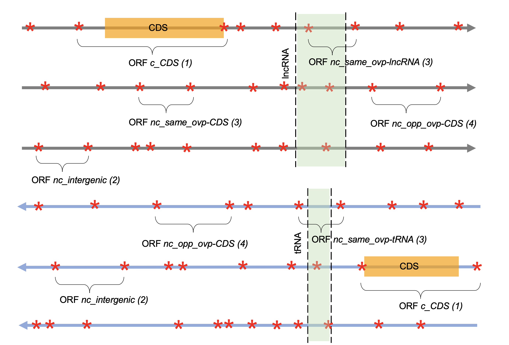
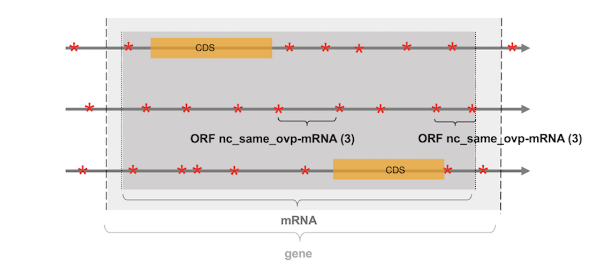

ORF annotation#
The ORF annotation relies on the comparison of their localization with those of all the genomic features annotated in the input GFF file (e.g. coding sequences (CDS), tRNA, lncRNA, snoRNA, pseudogenes...). ORFs are subsequently assigned as coding (c_CDS) (if they include in the same frame a CDS) or noncoding (nc). Noncoding ORFs are then subdivided into noncoding intergenic ORFs (nc_intergenic) or noncoding overlapping ORFs (nc_ovp-x with x refering to the overlapping genomic feature) (see here for the definition of an overlap). The former correspond to ORFs which do not overlap any genomic feature. The latter consist of ORFs which overlap a non-phased genomic feature (i.e. non coding) on the same or the opposite strand or which overlap a CDS in another frame. Depending on the localization of the overlapping feature (same or opposite strand), the ORFs are annotated as nc_ovp_same-x or nc_ovp_opp-x respectively.
Note
Notice that the ORFmap annotation has a particular point of view on the genome which is centered on the identification and annotation of a genome's ORFs rather than the annotation of real biological objets (e.g. tRNA, rRNA or lncRNA for example). ORFmap looks at the genome with a protein perspective where the ORFs of a genome can be seen as its potential for novel peptides or proteins upon the pervasive translation of their corresponding RNAs.
Annotation rules#
ORF categories#
ORFs can be annotated according to four different categories:
- (1)
c_CDSORFs which include in the same frame a CDS - (2)
nc_intergenicORFs which do not overlap any genomic feature - (3)
nc_ovp_same-xORFs which overlap on the same strand, a genetic feature no matter its type - (4)
nc_ovp_opp-xORFs which overlap on the opposite strand, a genetic feature no matter its type
See examples of each type in Figure 1.

Figure 1: representation of the six frames of a DNA section. STOP codons
are represented with red stars, CDS with orange boxes and
the localization of the non-phased genomic features
(e.g. tRNA, lncRNA) are represented with green boxes.
Note
Notice that a noncoding ORF which overlaps a tRNA is not considered as a tRNA and will not be annotated as tRNA, but rather as an ORF that overlaps a tRNA. Indeed a tRNA is a RNA molecule that does not follow the ORF definition (not bounded by STOP codons, whose sequence length is not necessarily a multiple of 3...). Here ORFs are seen as potential peptides or proteins that could be produced upon the pervasive translation of their corresponding RNA. Annotating all ORFs with the genomic feature they overlap enables their analysis in a very flexible fashion. Indeed, the user can adopt different levels of annotation, considering all noncoding ORFs as a whole (i.e. regardless of the fact they overlap a genomic feature or not) or differentiating noncoding ORFs from noncoding ORFs that overlap specific genomic features (e.g. tRNA and rRNA) (see the ORFget section for more details).
Priority rules#
If a noncoding ORF overlaps multiple genomic features, it will be annotated according to the following priority rules:
-
if the noncoding ORF overlaps a CDS and another annotated feature, the CDS has priority over the other annotated features no matter the CDS is located on the same or the opposite strand. The ORF will be annotated as a noncoding ORF overlapping a CDS (e.g. nc_ovp_(same/opp)-CDS).
-
if the noncoding ORF overlaps an annotated feature on the same strand and another annotated feature on the opposite strand (except CDS), the annotated feature located on the same strand has priority over the other features on the opposite strand. The ORF will be annotated as a noncoding ORF overlapping the feature on the same strand (e.g. nc_ovp_same-x).
-
if the noncoding ORF overlaps multiple annotated features located on the same strand, the feature with the larger overlap with the ORF to be annotated has priority over the other features (e.g. nc_ovp_(same/opp)-x).
-
if the noncoding ORF overlaps multiple features located on the same strand and that cover the same fraction of the ORF to be annotated, the feature which first appears in the GFF file has priority over the others. This case occurs with large annotated features that embed smaller elements.
Particular case of genes and exons. Notice that many genomic features overlap together or can be intertwined with each other (e.g. a gene includes one or several mRNAs which in turn include exons and CDS). By default, the features "gene" and "exon" are not considered. ORFs that match at the same time with the features "gene" and "mRNA" are annotated as nc_(same/opp)_ovp-mRNA (see Figure 2), while those that match with a CDS and its corresponding exon, will be annotated as c_CDS (i.e. coding ORFs). Finally, noncoding ORFs that overlap in another frame a CDS, and an exon will be annotated as nc_(same/opp)_ovp-CDS.

Figure 2: representation of the three frames of a DNA strand section
containing a protein coding gene.
STOP codons are represented with red stars,
the two CDS of the multiexonic gene with orange boxes, while
the protein coding gene and its corresponding mRNA are
represented with light and dark grey boxes respectively.
The two ORFs indicated with brackets do not overlap the CDS
of the gene and are subsequently annotated as noncoding. However,
they overlap the gene and its corresponding mRNA. As the mRNA has priority
over the gene feature, the two ORFs are annotated as noncoding ORF
overlapping a mRNA (nc_ovp_same-mRNA).